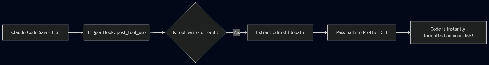

4. Advanced Features & Customization#
This chapter explores how to customize Claude Code’s behavior to fit your exact workflow. You’ll learn how to inject domain-specific instructions with Agent Skills, offload complex tasks to Subagents, and trigger automatic scripts using Hooks.
4.1. 1. Agent Skills: Dynamic “How-To” Manuals#
What are they? Agent Skills are modular markdown files that teach Claude how to do specific things perfectly. Instead of typing a massive prompt every time, you define a Skill once. When Claude detects a relevant task, it automatically reads the Skill to learn the exact steps, patterns, and checklists.
4.1.1. Authentic Example: Test-Driven Development (TDD) Skill#
Imagine you want Claude to always write tests before writing the actual code. You can create a TDD Skill.
Sample Script (skill.md):
---
name: TDD Master
description: A specialized agent skill for Test-Driven Development in TypeScript.
---
# TDD Workflow
When asked to write a new feature, you must strictly follow the Red-Green-Refactor cycle:
1. **Red**: Write a failing Jest test for the new feature first. Focus purely on expected inputs and outputs.
2. **Green**: Write the minimal amount of TypeScript code to make the test pass.
3. **Refactor**: Clean up the code. Ensure types are strict and no `any` is used.
Workflow:
Save this file in your skills directory or project root.
Type
/skillsin Claude Code to ensure it’s loaded.Next time you say, “Implement a user login validation module,” Claude will automatically see the
TDD Masterskill, adopt the workflow, and write your test files before touching the implementation logic.
4.2. 2. Subagents: A Team of Specialized AI Assistants#
What are they? If you ask Claude to “Review the entire repository for security flaws,” the massive amount of code and intermediate thinking will bloat your main chat context, making the AI slow and expensive.
Subagents solve this. They are independent AI workers spawned in a separate, isolated context. They go off to do the heavy lifting and only report the final results back to you.
4.2.1. Authentic Workflow: Creating a Frontend Code Reviewer#
Create: Type
/agent->create new agent-> choose a Project scope.Configure: Name it
UX Reviewer. Give it Read-Only tool permissions so it cannot break your codebase. Give it a distinctive color like Cyan.Instructions: “You are a strict UX/UI reviewer. Audit HTML/CSS for accessibility (aria-tags) and modern responsive design best practices.”
Trigger: In your main chat, type: “Please ask the UX Reviewer to audit
index.html.”Result: Claude spawns the Subagent in the background. Your main chat remains clean. After a minute or two, the Cyan Subagent pipes up with a clean markdown report of formatting suggestions!
4.2.2. Skill vs. Subagent: The Golden Rule#
Feature |
Agent Skill |
SubAgent |
|---|---|---|
Context Memory |
Shared. It thinks and works inside your current active chat window, increasing your token load. |
Isolated. It gets a brand-new, empty sandbox to work in and doesn’t pollute your main chat history. |
Best Scenario |
Quick tasks, maintaining coding standards, generating fixed-format logs (e.g., writing a daily status report). |
Huge tasks, massive file reads, exhaustive research (e.g., Code review, full project refactoring analysis). |
4.3. 3. Automated Formatting with Hooks#
Hooks let you hijack Claude’s actions. You can tell your computer to automatically run a background script every time Claude finishes using a specific tool (like writing a file).
4.3.1. Authentic Example: Auto-Formatting with Prettier#
If Claude occasionally writes messy HTML, you can force it through prettier immediately after it saves.
Type
/hooks.Select Trigger:
post_tool_use(Runs immediately after a tool is used).Select Matcher:
writeandedit(Only run when files are modified).Command to run:
jq -r .file_path | xargs prettier --write(This script usesjqto extract the exact file path Claude just edited from the raw JSON payload, and passes it to your localprettierlibrary CLI for instant formatting).

4.4. 4. Plugins: The Ultimate “All-in-One” Power-Up#
What are they? A Plugin is a distributable “capsule” that bundles everything we’ve learned so far. It can contain Skills, Subagents, Hooks, and MCP Server configurations all wrapped together for easy one-click installation and sharing across teams.
4.4.1. The Difference: Skills vs. Plugins#
To understand the difference as a beginner, think of learning to cook:
A Skill is like handing Claude a Recipe Book. It’s purely a text document with instructions telling the AI how to write code. However, it doesn’t give Claude any new tools in the kitchen.
A Plugin is like installing a Fully-Equipped Kitchen. It’s an application bundle. When you install a Plugin, you aren’t just giving Claude the recipe (Skill); you might also be giving it a dedicated sous-chef (Subagent), an automated oven timer (Hook), and direct access to a fancy grocery delivery API (MCP Server).
4.4.2. Authentic Example: The Frontend Design Workflow#
Imagine you want Claude to get really good at Frontend web development and perfectly adhere to your company’s UI standards.
Scenario A: Using a Skill You write a
skill.mdsaying “Always use React, Tailwind CSS, and deep purple colors.” Claude will read this and try to follow it. But it doesn’t have tools to format the code or preview the actual design.Scenario B: Installing a Plugin You type
/pluginand install a “Frontend Mastery Plugin” created by your senior engineer. With this ONE download, your project is instantly equipped with an entire ecosystem:A Skill: Contains the exact UI aesthetic guidelines and Tailwind class rules.
An MCP Server: Automatically connects Claude to your company’s live Figma design system to pull exact pixel tokens.
A Hook: Automatically runs
prettierandeslintevery time Claude generates a.tsxfile, guaranteeing the syntax is flawless.A Subagent: An isolated AI assigned to review the generated HTML for visual accessibility (a11y) in the background.
Workflow:
Type
/plugin discoverin Claude Code to open the marketplace.Select and install the desired plugin (like
Frontend Design).Next time you prompt “Build me a dashboard”, Claude activates the entire integrated toolchain—querying Figma, formatting on save, and adhering to strict UI guidelines.
4.5. Read More#
Claude Code Agent Skills Guide — How to create and manage Agent Skills.
Claude Code Hooks Reference — Automate actions with pre/post tool-use hooks.
Claude Code Sub-Agents — Spawning isolated AI workers for heavy tasks.
Prettier Documentation — The code formatter used in the Hooks example.
ESLint Getting Started — JavaScript/TypeScript linting tool often paired with Hooks.
4.6. Knowledge Quiz#
Q1: Why is it a bad idea to use an Agent Skill for a repository-wide security code audit?
Answer
Because Agent Skills share your primary conversation's context memory. A massive code audit will flood the chat history with intermediate reasoning and thousands of lines of code, slowing down the AI and drastically increasing token costs for subsequent messages. You should delegate this to an isolated Subagent instead.Q2: How does a “Hook” improve the quality of AI-generated code?
Answer
A Hook allows you to automatically trigger local command-line tools (like Linters, formatters, or test runners) immediately before or after the AI modifies a file. For example, a `post_tool_use` hook can auto-run Prettier on a file the AI just saved, guaranteeing adherence to your project's syntax formatting rules without manual intervention.Q3: What makes a “Plugin” more powerful than a simple “Agent Skill” for a development team?